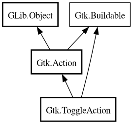

ToggleAction
Object Hierarchy:

Description:
[
CCode ( type_id =
"gtk_toggle_action_get_type ()" ) ]
[
Version ( deprecated =
true , deprecated_since =
"3.10" ) ]
public class ToggleAction :
Action,
Buildable
Warning: ToggleAction is deprecated since 3.10.
Content:
Properties:
Creation methods:
Methods:
Signals:
- public virtual signal void toggled ()
Inherited Members:
All known members inherited from class Gtk.Action
All known members inherited from class GLib.Object
All known members inherited from interface Gtk.Buildable